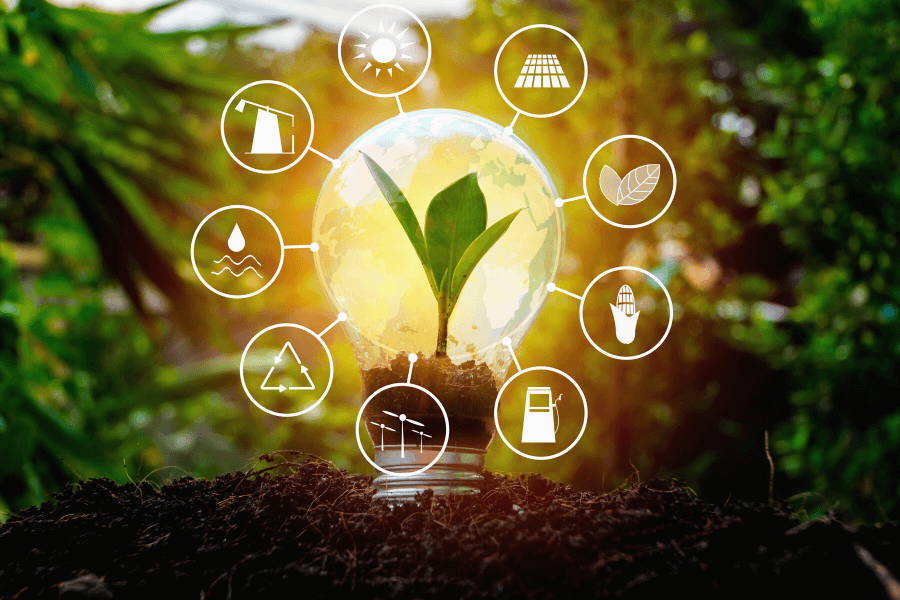

Rodzaje odnawialnych źródeł energii
Znaczenie
Wykorzystanie odnawialnych źródeł energii pozwala nie tylko zmniejszyć zanieczyszczenie środowiska
(spowodowane emisją do atmosfery szkodliwych produktów spalania paliw kopalnych), lecz także uzyskać czystą energię, na którą zapotrzebowanie cały czas wzrasta.
Rodzaje źródeł energii
źródłami energii są słońce, wiatr, woda (rzeki, pływy i fale morskie), energia jądrowa (w zamkniętym cyklu paliwowym (system operacji i procesów technologicznych, obejmujący wydobycie rud zawierających materiały rozszczepialne) ),
biomasa, biogaz, biopłyny, biopaliwa oraz ciepła pozyskane z ziemi (energia geotermalna), powietrza (energia aerotermalna), wody (energia hydrotermalna).

Energia słoneczna
Energia wiatrowa
Energia wodna
Energia biomasy